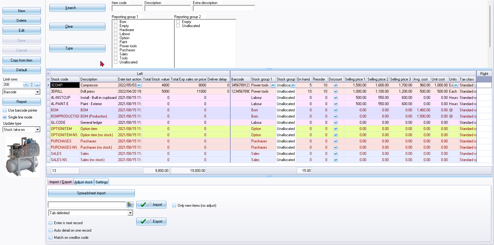
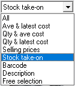
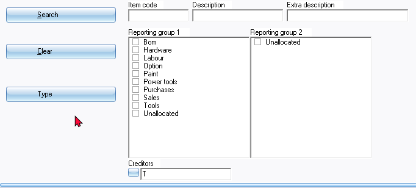
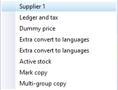

Stock (Inventory / Products)
The Stock items / Inventory items / products) in osFinancials5 features a comprehensive inventory system designed to manage and track stock items, inventory items or products. It supports an unlimited number of stock items and allows for detailed item-specific information. The inventory system also offers up to two reporting groups, enabling efficient data organisation and analysis.
With eleven different stock item types available, osFinancials provides flexibility in managing various types of products. When processing documents for debtors or creditors, or generating reports, the stock item lookup function helps in selecting the appropriate products. The system utilizes the chosen stock item's details to calculate selling and cost prices based on specified quantities, ensuring accurate pricing information on documents and reports.
|
|
In addition to the Financial entry stock item type, which allows for processing both sales and purchase documents by selecting ledger accounts, you can choose from various other stock item types when working with sales documents (such as Quotes, Invoices and Credit notes). These options include "Default, Sales, Sales (No stock), Option item, Option item (No stock), BOM (Bill of Materials), BOM (Bill of Materials) - Production" or "Linked item" stock item types. Similarly, when processing purchase documents (like Orders, Purchases, and Supplier returns), you have the flexibility to select from stock item types, including " Default, Purchases, Purchases (No stock), Option item, Option item (No stock), BOM (Bill of Materials), BOM (Bill of Materials) - Production" or "Linked item" stock item types. |

The Stock items feature in osFinancials allows for easy management of inventory items or products. You can create, edit, delete, or disable items as needed, and the feature provides filtering and search options for efficient item location. Within each item, you can make changes to important details such as stock code, description, quantities, reorder levels, and more.
Additionally, the inventory system offers various settings on the Ledger tab and allows for managing activities on the Document groups, Transactions, Image, Multi-group, and Backorders tabs. This comprehensive set of features ensures efficient inventory tracking, accurate pricing, and streamlined document and report generation, making osFinancials5 a reliable solution for managing and optimizing your inventory management processes.
Overall, osFinancials5's inventory system offers a comprehensive solution for managing and tracking stock items (inventory items) or products, allowing for efficient inventory tracking, accurate cost and selling price calculation, and streamlined document and report generation.
|
Serials-Batches-Location plugin : Licence :- Manual - Shop - Licence : Once-off - Added the Serials and Batches to document layout files and 2 reports (i.e. On hand and Stock movement report). The "Serials-Batches-Location" plugin in osFinancials appears to be a tool designed to manage and track inventory, specifically serial numbers, batches, and locations. Features:
|
To access Stock items:
- On the Default ribbon, select Stock items (F12).

- Buttons – The following buttons are available:
|
|
You may also double click on a selected stock item. |

- Save – Save any changes to a stock item.
- Cancel – Cancel will revert to the previous values. Any changes will not be saved.
- Copy from item – This will create an exact copy of a selected stock item. You only need to enter the Stock code and change / edit the necessary fields.
|
|
You may also select the stock item type. The fields that are not applicable to a selected stock item type, will be disabled / enabled. |
- Default / Advanced mode – This will display the Export / Import, Adjust stock and Settings tabs. Clicking on the Default button, the button's caption will change to display Advanced mode. This will hide the Export / Import, Adjust stock and Settings tabs. In the Advanced mode, you may enter / edit data (values) of stock items (like you would in a spreadsheet).
- Limit rows - The default is "200" records to be listed displayed on this screen. If necessary, you may change that.
- Reports – Prints the selected report type for the selected stock item(s) only. If you need to include all items, click on the Report button.
|
|
These barcodes or the Yagoda barcodes may also be printed from the Reports → Stock → Print labels (Reports ribbon). |
|
|
These reports are designed using the Reportman. These reports are located in the “...\plug_ins\reports\REPORTS\STOCK” directory. |
|
|
There are two (2) options to print these reports, i.e.:
|
- Use barcode printer – Select this option if you have a barcode printer configured and setup on your system; and you need to print the Barcodes (i.e. Barcode or Yagoda barcode) report type from the list.
- Single line mode - This option has three (3) basic settings:
- If this field is selected (ticked) and the Advanced mode (Export / Import, Adjust stock and Settings tabs displayed), each stock item record will be listed in a single row.
- If this field is not selected (not ticked) and the Advanced mode (Export / Import, Adjust stock and Settings tabs displayed), a fixed right pane column (similar to the left pane on which the stock code and date last action columns are by default displayed) will be added. You may drag any column between the left and right panes to be added.
- If this field is selected (ticked) and the Default mode (Export / Import, Adjust stock and Settings tabs not displayed), each stock item record will be listed in a single row.
- If this field is not selected (not ticked) and the Advanced mode (Export / Import, Adjust stock and Settings tabs displayed), the fields for stock item records will be grouped in some columns (e.g. Units, Stock group1 / 2, Stock item type, Cost centres, etc.).
- Update type - The following options are available to change (group) the columns:

- Search filter / options – Filter by entering the Item Code, Description or Extra description and/or by selecting (ticking) the Reporting group 1 / 2. If you click on the Search button, the only those stock items that matches your search / filter criteria will be listed. If you click on the Type button, you may select Item Code, Description, Extra description, Reporting group 1, Reporting group 2 or Creditor.

|
|
If the "Creditor" option is selected in the "Type" field, you may select the Creditor account on the Lookup. This will list those stock items which are linked to the creditor (supplier / vendor) account in the "Preferred supplier 1" (Default Supplier 1) field of a Stock item. |
- Context menu – The following options are available:
- Print single item – Prints the selected report type for the selected stock item(s) only. If you need to include all items, click on the Report button.
- Copy – The following options to process Supplier 1 and Purchase Sales Stock Tax are available:
- Copy from / init and Paste to / perform on selected rows:

- Stock item - Similar than the Copy from item button. – This will create an exact copy of a selected stock item. You only need to enter the Stock code and change / edit the necessary fields.
- Reporting group 1 - Change the reporting group of a stock item, if Reporting group 1 was set for Stock items (as added in Setup → Groups - Stock group 1 on the Setup ribbon).
|
|
The colours of the rows (list of stock items) will be changed, if set in Reporting group 1. |
- Reporting group 2 – Change the reporting group of a document, if Reporting group 2 was set for Stock items (as added in Setup → Groups - Stock group 2 on the Setup ribbon).
- Mass check - This option will run a check on all stock items. The stock item form will be automatically opened and closed for each stock item.
- Grid totals - This will display the line count (number of records in rows / stock items) that is available on the list. The number of records will indicate the number of records that matches your filter / search criteria.